Estimate data depth using ddalpha::depth.().
Usage
stat_depth(
mapping = NULL,
data = NULL,
geom = "contour",
position = "identity",
contour = TRUE,
contour_var = "depth",
notion = "zonoid",
notion_params = list(),
n = 100L,
show.legend = NA,
inherit.aes = TRUE,
...
)
stat_depth_filled(
mapping = NULL,
data = NULL,
geom = "contour_filled",
position = "identity",
contour = TRUE,
contour_var = "depth",
notion = "zonoid",
notion_params = list(),
n = 100L,
show.legend = NA,
inherit.aes = TRUE,
...
)Arguments
- mapping
Set of aesthetic mappings created by
aes(). If specified andinherit.aes = TRUE(the default), it is combined with the default mapping at the top level of the plot. You must supplymappingif there is no plot mapping.- data
The data to be displayed in this layer. There are three options:
If
NULL, the default, the data is inherited from the plot data as specified in the call toggplot().A
data.frame, or other object, will override the plot data. All objects will be fortified to produce a data frame. Seefortify()for which variables will be created.A
functionwill be called with a single argument, the plot data. The return value must be adata.frame, and will be used as the layer data. Afunctioncan be created from aformula(e.g.~ head(.x, 10)).- geom
The geometric object to use to display the data for this layer. When using a
stat_*()function to construct a layer, thegeomargument can be used to override the default coupling between stats and geoms. Thegeomargument accepts the following:A
Geomggproto subclass, for exampleGeomPoint.A string naming the geom. To give the geom as a string, strip the function name of the
geom_prefix. For example, to usegeom_point(), give the geom as"point".For more information and other ways to specify the geom, see the layer geom documentation.
- position
A position adjustment to use on the data for this layer. This can be used in various ways, including to prevent overplotting and improving the display. The
positionargument accepts the following:The result of calling a position function, such as
position_jitter(). This method allows for passing extra arguments to the position.A string naming the position adjustment. To give the position as a string, strip the function name of the
position_prefix. For example, to useposition_jitter(), give the position as"jitter".For more information and other ways to specify the position, see the layer position documentation.
- contour
If
TRUE, contour the results of the depth estimation.- contour_var
Character string identifying the variable to contour by. Can be one of
"depth"or"ndepth". See the section on computed variables for details.- notion
Character; the name of the depth function (passed to
ddalpha::depth.()).- notion_params
List of additional parameters passed via
...toddalpha::depth.().- n
Number of grid points in each direction.
- show.legend
logical. Should this layer be included in the legends?
NA, the default, includes if any aesthetics are mapped.FALSEnever includes, andTRUEalways includes. It can also be a named logical vector to finely select the aesthetics to display.- inherit.aes
If
FALSE, overrides the default aesthetics, rather than combining with them. This is most useful for helper functions that define both data and aesthetics and shouldn't inherit behaviour from the default plot specification, e.g.borders().- ...
Arguments passed on to
ggplot2::geom_contourbinsNumber of contour bins. Overridden by
breaks.binwidthThe width of the contour bins. Overridden by
bins.breaksOne of:
Numeric vector to set the contour breaks
A function that takes the range of the data and binwidth as input and returns breaks as output. A function can be created from a formula (e.g. ~ fullseq(.x, .y)).
Overrides
binwidthandbins. By default, this is a vector of length ten withpretty()breaks.
Value
A ggproto layer.
Details
Depth is an extension of the univariate notion of rank to bivariate (and sometimes multivariate) data (Rousseeuw &al, 1999). It comes in several flavors and is the basis for bagplots.
stat_depth() is adapted from ggplot2::stat_density_2d() and returns
depth values over a grid in the same format, so it is neatly paired with
ggplot2::geom_contour().
Biplot layers
ggbiplot() uses ggplot2::fortify() internally to produce a single data
frame with a .matrix column distinguishing the subjects ("rows") and
variables ("cols"). The stat layers stat_rows() and stat_cols() simply
filter the data frame to one of these two.
The geom layers geom_rows_*() and geom_cols_*() call the corresponding
stat in order to render plot elements for the corresponding factor matrix.
geom_dims_*() selects a default matrix based on common practice, e.g.
points for rows and arrows for columns.
Ordination aesthetics
This statistical transformation is compatible with the convenience function
ord_aes().
Some transformations (e.g. stat_center()) commute with projection to the
lower (1 or 2)-dimensional biplot space. If they detect aesthetics of the
form ..coord[0-9]+, then ..coord1 and ..coord2 are converted to x and
y while any remaining are ignored.
Other transformations (e.g. stat_spantree()) yield different results in a
lower-dimensional biplot when they are computed before versus after
projection. If the stat layer detects these aesthetics, then the
transformation is performed before projection, and the results in the first
two dimensions are returned as x and y.
A small number of transformations (stat_rule()) are incompatible with
ordination aesthetics but will accept ord_aes() without warning.
Computed variables
These are calculated during the statistical transformation and can be accessed with delayed evaluation.
stat_depth() and stat_depth_filled() compute different variables
depending on whether contouring is turned on or off. With contouring off
(contour = FALSE), both stats behave the same, and the following
variables are provided:
depththe depth estimate
ndepthdepth estimate, scaled to a maximum of 1
With contouring on (contour = TRUE), either ggplot2::stat_contour() or
ggplot2::stat_contour_filled() is run after the depth estimate has been
obtained, and the computed variables are determined by these stats.
References
Rousseeuw PJ, Ruts I, & Tukey JW (1999) "The Bagplot: A Bivariate Boxplot". The American Statistician, 53(4): 382–387. doi:10.1080/00031305.1999.10474494
See also
Other stat layers:
stat_bagplot(),
stat_center(),
stat_chull(),
stat_cone(),
stat_projection(),
stat_rule(),
stat_scale(),
stat_spantree()
Examples
# base Motor Trends plot
b <- ggplot(mtcars, aes(wt, disp)) + geom_point()
# depth raster
b + geom_raster(stat = "depth", aes(fill = after_stat(depth)))
 # depth grid
b + stat_depth(
geom = "point", contour = FALSE,
aes(size = after_stat(depth)), n = 20
)
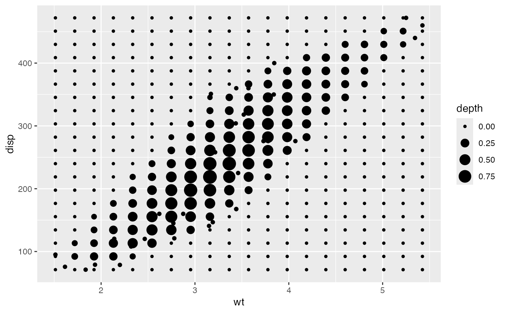
# depth contours
b + geom_contour(stat = "depth", contour = TRUE)
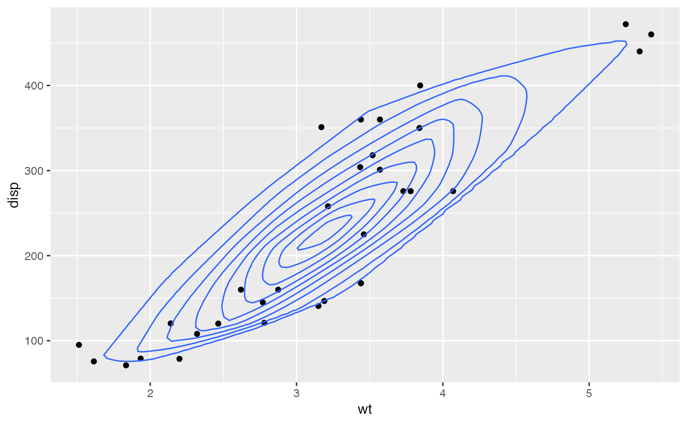
# depth bands
b + geom_contour_filled(stat = "depth_filled", contour = TRUE, alpha = .75)
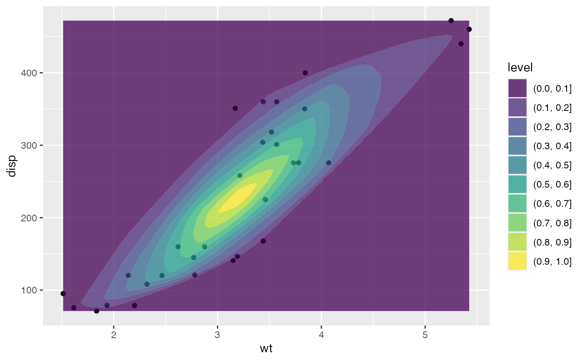
# contours colored by group
b + stat_depth(aes(color = factor(cyl)))
# depth grid
b + stat_depth(
geom = "point", contour = FALSE,
aes(size = after_stat(depth)), n = 20
)
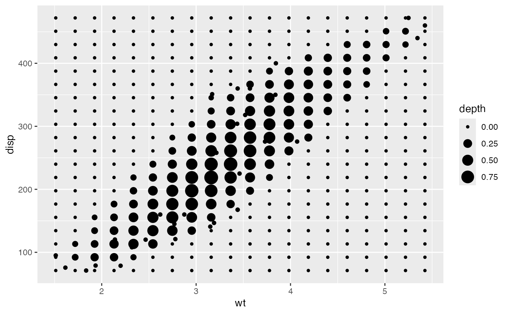
# depth contours
b + geom_contour(stat = "depth", contour = TRUE)
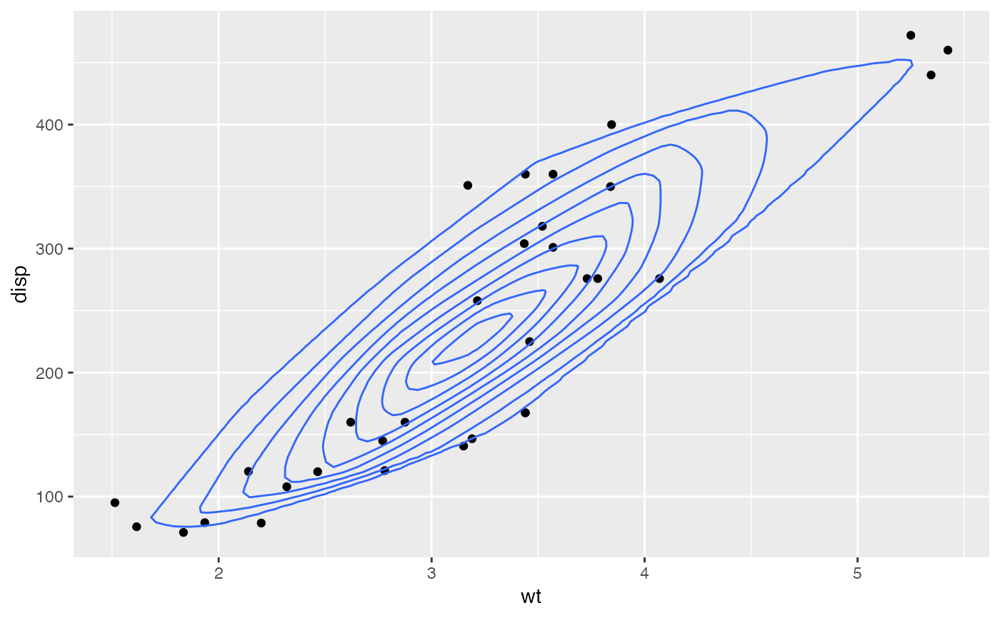
# depth bands
b + geom_contour_filled(stat = "depth_filled", contour = TRUE, alpha = .75)
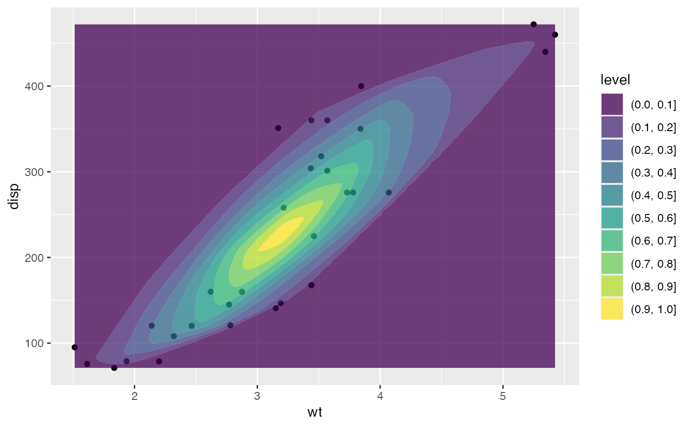
# contours colored by group
b + stat_depth(aes(color = factor(cyl)))
 # custom depth notion
b + stat_depth(
aes(color = factor(cyl)),
notion = "halfspace", notion_params = list(exact = TRUE)
)
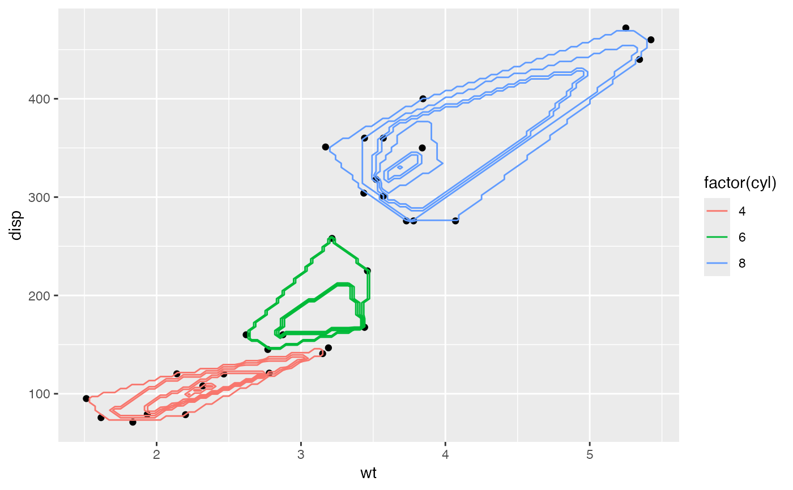
# contours faceted by group
b + stat_depth_filled(alpha = .75) +
facet_wrap(facets = vars(factor(cyl)))
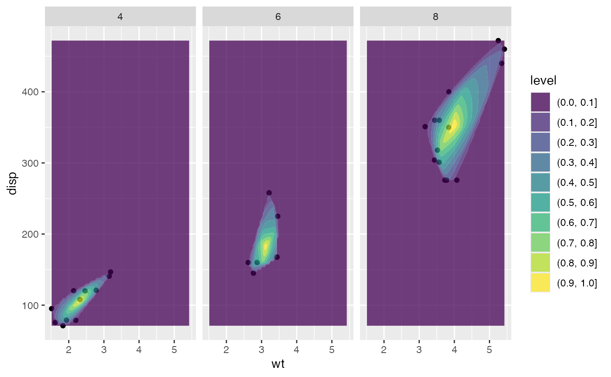
# scaled to the unit interval
b + stat_depth_filled(contour_var = "ndepth", alpha = .75) +
facet_wrap(facets = vars(factor(cyl)))
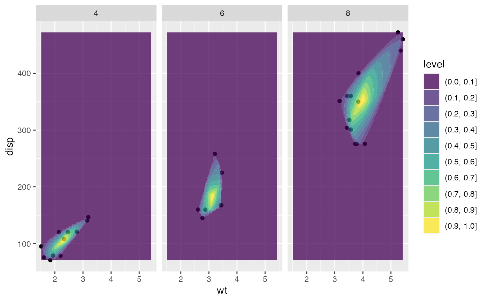
# custom depth notion
b + stat_depth(
aes(color = factor(cyl)),
notion = "halfspace", notion_params = list(exact = TRUE)
)
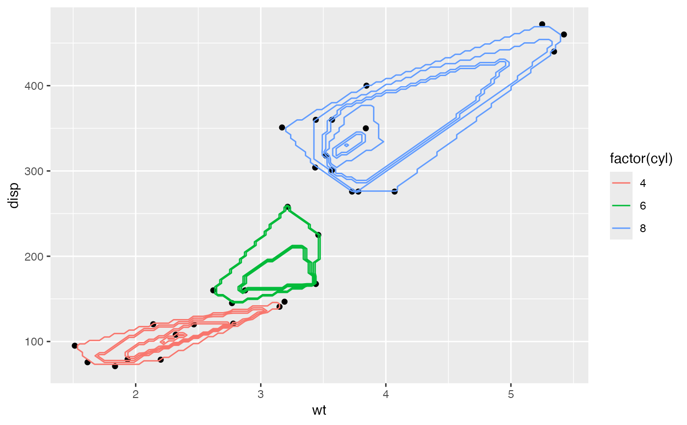
# contours faceted by group
b + stat_depth_filled(alpha = .75) +
facet_wrap(facets = vars(factor(cyl)))
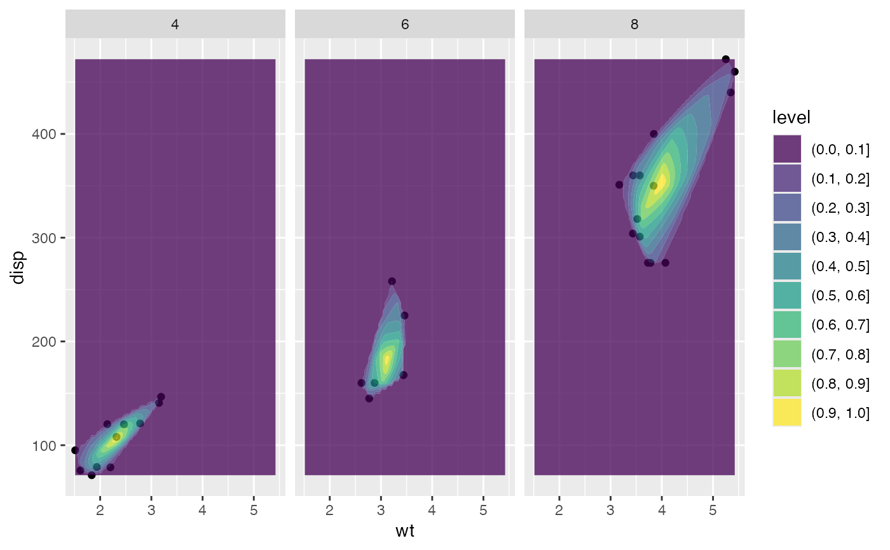
# scaled to the unit interval
b + stat_depth_filled(contour_var = "ndepth", alpha = .75) +
facet_wrap(facets = vars(factor(cyl)))
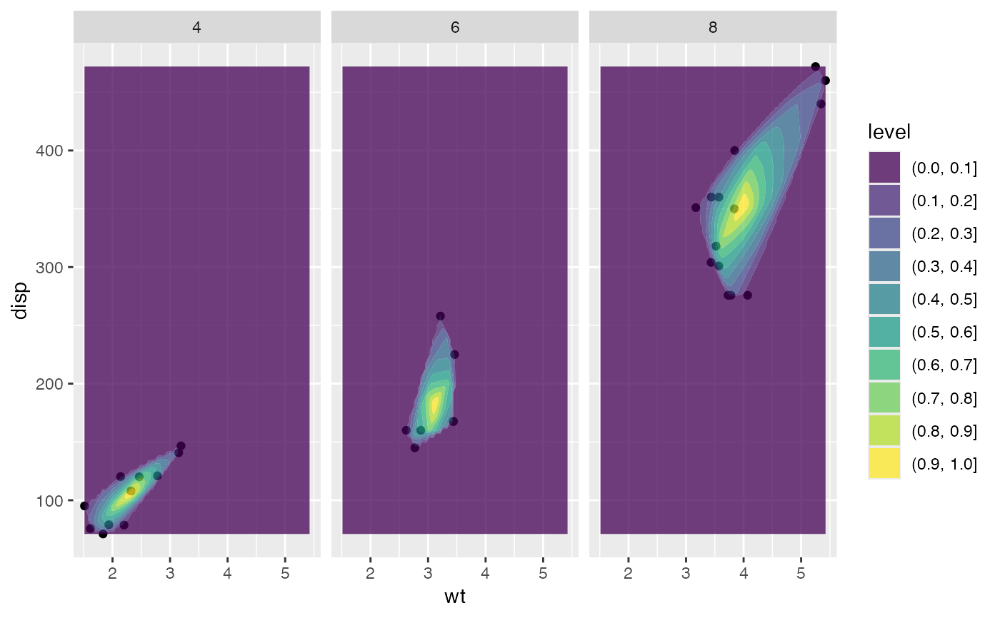